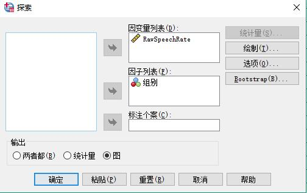

参与《EFL学习者独白复述中同伴反馈的实证研究——以西北农林科技大学英语专业学生为例》项目的数据分析，
使用SPSS 20对实验数据用F检验法做假设检验。
近年来，受前苏联心理学家维果斯基的社会文化理论和“以学生为中心”的教育理念的影响，同伴反馈在外语教学中引起了广泛关注，很多学者和教师对此进行了大量研究。同伴反馈作为教师反馈的补充，最初主要被应用于二语写作教学中，对写作教学起到了很好的促进作用。该教学活动大大提高了英语学习者的读者意识和写作兴趣，在教学方面的研究已很广泛。但遗憾的是目前国内对于同伴反馈的研究大多集中于二语写作中，对于同样作为重要语言输出的口语教学的研究却相对较少。
该项目拟从社会文化理论中的最近发展区理论和脚手架理论出发，对有无同伴反馈两种不同情况下，EFL学习者两次独白的复杂度，精确度和流利度（CAF）的差异进行对比。利用SPSS软件的单因素方差分析功能探究两种情况下EFL学习者CAF差异的显著性。在此基础上，运用定性分析的方法探究同伴反馈与所存在差异的相关性。
该项目发现，被随机选中的EFL学习者已经具备了基本的同伴反馈能力。通过同伴反馈这一课堂活动，EFL学习者口语独白的复杂度，流利度得到了极显著提高，精确度得到了显著提高。 因此，同伴反馈作为一个重要的反馈活动，应该被广泛应用于口语教学中，帮助EFL学习者提高口语练习的流利度，复杂度和精确度。
预备条件
SPSS 20下载 数据 方差分析 stcp-marshallsamuels-NormalityS repeating a monologue under increasing time press.pdf张文彤《SPSS20.0统计分析基础教程第2版》.pdf
基本概念
在科学试验和生产实践中，影响一事物的因素往往是很多的。例如在化工生产中，有原料成分、原料剂量、催化剂、反应温度、压力、溶液浓度、反应时间等因素。每一个因素的改变可能影响产品的数量和质量。
在试验中，我们将要考察的指标称为试验指标，影响试验指标的称为因素，因素可以分为两类一类是不可控因素，例如测量误差，气候条件。 一类是可控因素，如果一项试验的过程中只有一个因素在改变称为单因素试验，如果多于一个因素在改变称为多因素试验。因素所处的状态称为水平。 本项目旨在探究同伴反馈这一因素的两个水平下，均值差别的显著性检验。
在试验中，我们将要考察的指标称为试验指标，影响试验指标的称为因素，因素可以分为两类一类是不可控因素，例如测量误差，气候条件。 一类是可控因素，如果一项试验的过程中只有一个因素在改变称为单因素试验，如果多于一个因素在改变称为多因素试验。因素所处的状态称为水平。 本项目旨在探究同伴反馈这一因素的两个水平下，均值差别的显著性检验。
为了减少误差，在试验数据使用时，取第二次测试的数据来分析结果。
在使用SPSS进行单因素方差分析前，首先要求数据服从正态分布。打开SPSS 20将数据输入到编辑器里。点击(分析)Analyze --(描述统计)Descriptive Statistics --(探索)Explore。
将Raw Speech Rate放入因变量列表，将分组放入因子列表。点击绘制，描述性勾选直方图，并勾选待带检验的正态图。
可以看到Kolmogorow-Smirnov方法的显著性为0.2且大于0.05，故服从正态分布。并且根据下图也能大致判断是否服从正态分布。

同伴反馈这一因素只有两个水平$A_1 A_2$，因此在用单因素方差分析的时候，等同于独立样本 $t$ 检验，所得显著性值（Sig.）相同，
$F$值是$t$值的平方。
因此，每个水平下所有试验结果是一个总体，所得样本是抽样。设 $μ_1,μ_2$为两个水平的均值,则需要检验以下假设。即同伴反馈对Raw Speech Rate是否影响，其他项同理。
$$ H_0 :μ_1=μ_2$$ $$ H_1 :μ_1 \ne μ_2$$
然后选择 分析-比较均值-单因素ANOVA，选择两两比较，勾选假设方差齐性的LSD，选项里勾选描述性和方差同质性检验。并确定，得到如下分析。
第一个表格详细描述两组数据的均值，标准差。第二个表格是方差齐性检验，可以看到显著性为0.404且大于0.05，故方差是齐的。
第三个表格因为$F_{0.05} (1,26)=4.225<4.972$,故在显著性水平0.05下拒绝$H_0$，认为同伴反馈对Raw Speech Rate有显著的差异。